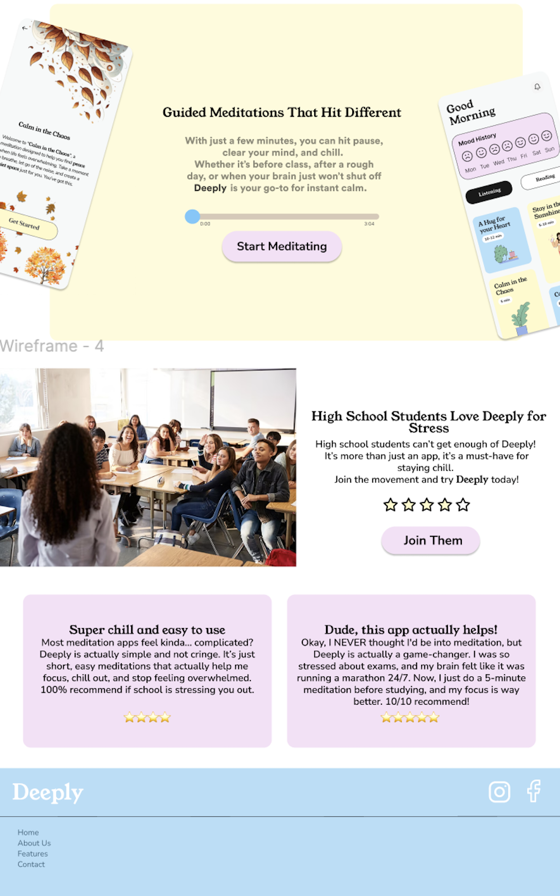

Hi, I'm Mara Elisa Bujor 👋
I'm a Web Development student at SRH in Berlin. I'm passionate about building thoughtful and accessible digital experiences — whether through hands-on coding or user-focused design. My work blends creativity and logic, and I enjoy collaborating on meaningful projects that make tech more human.
So far, I’ve worked on projects using JavaScript, React, SQL, Figma, ProtoPie, and Strapi — always learning and always improving. Below are a few highlights from my university journey.
Projects
Deeply — A Meditation App for Teens
Project type: University collaboration with a high school in Hamburg
Tools used: Figma, HTML/CSS, GitHub
Deeply is a design concept for a meditation and mindfulness app, created during a university project aimed at helping teenagers deal with stress and mental health challenges.
We worked in groups to explore different topics related to teens wellbeing. My group focused on meditation. After brainstorming ideas and doing some basic user research, I designed my own landing page concept for the app.
The goal was to keep the landing page calming, clear, and youth-friendly. I focused on clean layout, soft visuals, and intuitive navigation. The page includes an overview of the app's features, visual elements that reflect a peaceful vibe, and simple calls to action.
My contribution: I created the landing page design based on our group concept. I worked with Figma to design the layout and mood of the page, then built a simple static version using HTML and CSS.
🔗 GitHub:
View project on GitHub


Edurino Game Teaser Page
This challenge asked us to create a teaser page for a game idea that could appeal to both children and their parents — something you'd see on a shelf in a toy store. I chose a bold color palette inspired by Edurino’s branding and focused on a clear visual split: the top half for parents (with key educational benefits) and the lower half for kids (with links to playful mini-games).
It was an exercise in communicating to two very different audiences at once — which made it both fun and insightful.
Tools used: Figma, ProtoPie
Handycap App – Accessible Events Platform
This full-stack app helps people with disabilities find and attend accessible events. I worked on the frontend using Next.js and connected it to a custom Strapi CMS with multilingual support and user role management.
It was the first time I worked on a real content structure and user data flow — and it made me appreciate how much thought goes into accessibility.
Tools used: Strapi, Next.js, CSS
View code on GitHub
Contact